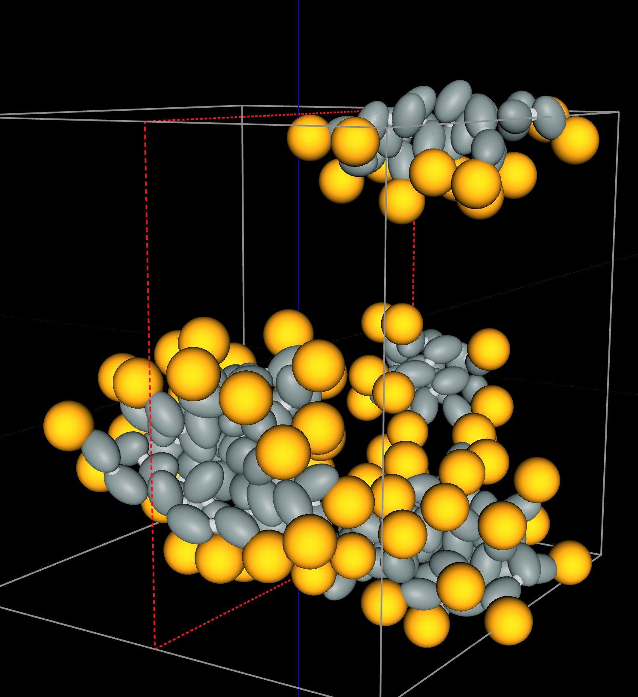
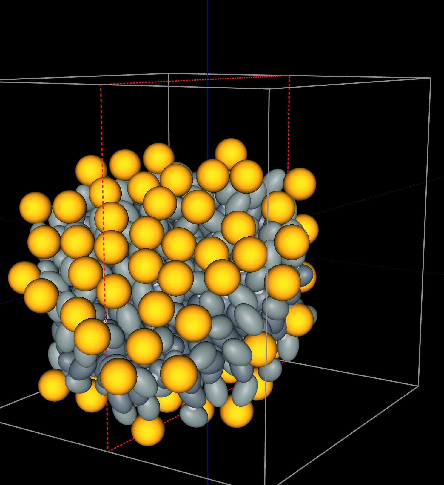
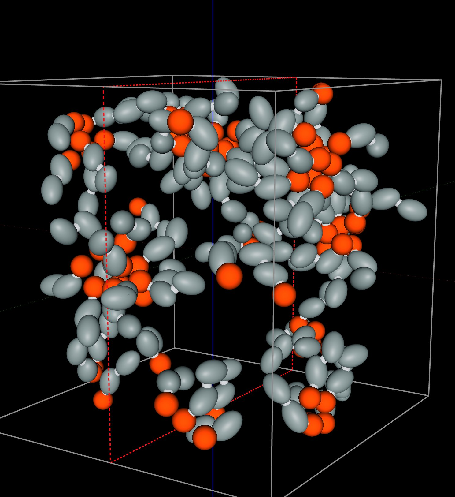

Self-Assembly: Molecules That Build Themselves
AIMS scatters three kinds of molecules at random, and an AI agent measures the structure that each kind builds.
A cell makes the lipids of its membrane one molecule at a time, and the lipids arrange themselves into the membrane. Soap molecules dissolved in water arrange themselves into balls called micelles. This is self-assembly: separate components form an ordered structure through the forces among them, and the structure that forms is decided by the shape of each component and by which of its parts attract or repel. AIMS models each lipid as a few beads and rods, and an AI agent sets up the experiments. A student asks a plain-language question, and the agent scatters the lipids at random, runs them, counts the aggregates they form, measures the shape of each aggregate, and posts the measured data in the chat as a live chart. In the window below, eighty lipids with one tail each start scattered at random at 300 K. Press Play and watch their tails gather.
Eighty one-tailed lipids at 300 K. The first aggregates form within about 100 ps of Play; the "Load this state" card under each answer in the chat puts the finished structure in the lab.
What Is Self-Assembly?
Whitesides and Grzybowski define self-assembly as “the autonomous organization of components into patterns or structures without human intervention.” Living things depend on self-assembly. The lipids of a cell membrane form a sheet two molecules thick, and in 1955 Fraenkel-Conrat and Williams separated tobacco mosaic virus into its protein and its RNA, mixed the two again, and recovered active virus. Engineers use self-assembly to make structures too small to build piece by piece, such as the patterns that block copolymers form on a silicon wafer. In each case the shape of a component and the forces among its parts decide the structure. The experiments in this article test that statement by changing the molecule and measuring the structure that results.
A Lipid Made of One Bead and Two Rods
A lipid has a polar head that mixes with water and one or two hydrocarbon tails that avoid water. Each lipid in this lab keeps those two parts. The head is one yellow bead 7 Å wide. A tail is two gray rods, each 7 Å long and 4.7 Å wide, joined end to end by a hinge, so the tail bends by a few tens of degrees at 300 K. Each rod is a Gay–Berne particle, an ellipsoid whose attraction to another rod depends on how the two rods are oriented. Modeling a molecule with a few such pieces is called coarse-grained modeling, and it makes the simulation fast enough to run in a browser. The companion article on micelle formation explains the approach with a simpler soap molecule made of four beads.
The box has no water molecules in it. Following Cooke, Kremer, and Deserno, who showed in 2005 that lipids made of a few beads assemble into membranes without any solvent, two rules stand in for the water: the tails attract one another, which does the work of the hydrophobic effect, and the heads repel everything. In the first experiment, eighty lipids share a periodic cube 71.8 Å on a side, a concentration of about 0.36 moles per liter, and fill 8 % of its volume.
Israelachvili, Mitchell, and Ninham explained in 1976 how the shape of a lipid decides the shape of the aggregate, with one number called the packing parameter, p = v/(a0l): the volume v of the tails divided by the area a0 that the head covers times the length l of the tails. A lipid with p below 1/3 is a cone, and cones pack into spherical micelles. A lipid with p between 1/2 and 1 is a truncated cone or a cylinder, and such lipids pack into bilayers. The lipid with one tail in this lab has p = 0.25. The same head on two tails has p = 0.50, the lower end of the bilayer range.
Running Experiments by Asking
AIMS is an AI-native environment. Scattering the lipids, running them, counting their aggregates, measuring the shape of each aggregate, and plotting the results are the agent's work. A student asks the agent to "run these lipids and chart the aggregates", and the agent recognizes the intent, configures the lab, runs the experiment, and posts a live chart of the results in the conversation.
Go to AIMS and open the list of examples, with the lightbulb button on the toolbar or the Examples item in the main menu (☰). Open Molecules That Build Themselves from the list (Biology), open the chat, and type the prompts below.
Be patient. Every picosecond is computed in your browser, and each prompt runs 1500 to 2500 picoseconds. The answer to each prompt in the example keeps its last frame: press "Load this state" on its card and the lab shows that frame.
- One tail — “Run these lipids for 1.5 ns at 300 K and chart the aggregates every 100 ps. What do they build, and what shape is it?”
- Two tails — “Now give each lipid a second tail under the same head, scatter 80 of them in a fresh cell, and run it for 2.5 ns. What do they build?”
- Oil — “Finally, put lipids with a small head and one tail in oil instead of water and run a fresh cell for 2 ns. What happens?”
One Tail: Micelles
The agent counts aggregates by joining any two lipids whose tails touch, and it averages the count over each 100 ps. The count of the eighty one-tailed lipids averaged 16 aggregates over the first 100 ps, and the aggregates then merged. At 1500 ps the box held two aggregates of 40 lipids each, with every lipid in one of the two.
A count of aggregates cannot tell a micelle from a tangle of lipids, so the agent measures each aggregate at the end of the run. The first measurement is the share of lipids whose head sits farther from the center of the aggregate than their tail: 100 %. The second is the three principal radii of the aggregate, which are the root-mean-square extents of its beads along its own three axes. A ball has three equal radii, a disc has one short radius, and a rod has one long radius. The radii of one of the two aggregates are 10, 8, and 7 Å, and the agent classifies both aggregates as spheres. Each aggregate has a core of tails with a radius of gyration of 12 Å, covered by heads: the structure of a micelle. A cone-shaped lipid with p = 0.25 built spherical micelles, as the packing parameter predicts.
Two Tails: A Bilayer
The second prompt gives each lipid a second tail under the same head and scatters eighty of the two-tailed lipids in a new cube. The lipids gathered within 400 ps into one aggregate, and all eighty were in the aggregate at 2500 ps. The three principal radii of the aggregate are 17, 14, and 8 Å: one radius is about half of the other two, and the agent classifies the aggregate as a disc.
A flat aggregate is a bilayer only if its lipids stand in two layers with the heads on the two faces. The agent tests this with three measurements. The agent finds the plane of the aggregate and counts the heads on each side of the plane: 39 on one side and 41 on the other. The agent measures the distance between the two layers of heads: 26 Å, about twice the 12 Å length of one lipid, so the tails of the two layers meet end to end in the middle. The agent measures how well the lipids line up with the normal to the plane, as the average of the absolute cosine of the angle between each lipid and the normal. That average is 1 when every lipid stands perpendicular to the plane and 0.5 when the lipids point in random directions. The two-tailed lipids gave 0.91, and the micelles of the first prompt gave 0.55. In the bilayer 98 % of the heads point outward. Two layers of lipids with the tails inside and the heads on both faces is the structure of a cell membrane. A lipid with p = 0.50 built a bilayer, as the packing parameter predicts.
One rule of the model was chosen to obtain this result, and the agent says so in its answer. The outer rod of each tail is a separate bead type, called the tail end, which attracts other tail ends and does not attract the inner rods of other tails. In a test run of the same eighty lipids without this rule, the lipids gathered into one aggregate with an alignment of 0.66, below the 0.7 that the agent requires of a sheet. The rule is a choice of the model and is not fitted to a measurement. The bilayer is also small: eighty lipids make a strip about as long as the cube, and a closed vesicle needs thousands of lipids.
In Oil: Inverse Micelles
In oil the head is the part of a lipid that avoids the liquid. The oily tails mix with the oil, and the polar heads, which oil does not dissolve, gather together. Surfactants such as AOT form inverse micelles in oil: small balls with the heads inside and the tails outside. The lab models oil the way it models water, with rules: in oil the heads attract one another and the tails only repel. A chip on the lab names the solvent.
The third prompt scatters eighty lipids with a small orange head, 4.7 Å wide, on one tail, in a cube of oil. Because the heads now make the core, the agent counts aggregates by joining lipids whose heads touch. At 2000 ps the box held five aggregates of 24, 17, 13, 13, and 11 lipids, and two lipids were in no aggregate. The agent classifies all five as spheres. Each has a core of heads with a radius of gyration of 5 to 7 Å, and in every aggregate all the tails point outward. These are inverse micelles, and each is smaller than the micelles of 40 lipids that formed in water.



The last frame of each prompt: micelles of one-tailed lipids in water (left; a micelle that crosses a face of the periodic cube appears in two parts), the bilayer of two-tailed lipids in water (middle), and inverse micelles of small-headed lipids in oil (right). Each frame is loaded by the "Load this state" card under the answer.
| Molecule | Liquid | p | Structure | Measured at the end of the run |
|---|---|---|---|---|
| Wide head, one taila cone | water | 0.25 | Micelles | 2 spheres of 40 lipids, every head outside |
| Wide head, two tailslower end of the bilayer range | water | 0.50 | Bilayer | 1 sheet of 80 lipids, 39 and 41 heads on its faces, 26 Å apart |
| Small head, one tail | oil | Inverse micelles | 5 spheres of 11 to 24 lipids, every tail outside |
Assembly at Equilibrium: Chains of Magnetic Nanoparticles
The two micelles of the first prompt formed by merging: the count of aggregates fell from 16 to 2 during the run. An earlier run of the same box for the same 1500 ps ended with three micelles of 38, 21, and 21 lipids. Two runs of the same lipids at the same temperature ended with different numbers and sizes of micelles, so the micelles had not reached equilibrium by the end of the run. A structure that depends on its history in this way is called kinetically trapped. Self-assembly can also reach equilibrium, where the components keep joining and leaving and the structure is set by the temperature, the concentration, and the strength of the bonds. A second example in AIMS shows assembly at equilibrium with magnetic nanoparticles.
A ferrofluid is a liquid that carries magnetic nanoparticles. Each nanoparticle is a permanent magnet, and two nanoparticles attract when the north pole of one meets the south pole of the other. De Gennes and Pincus predicted in 1970 that such nanoparticles link into chains when the attraction of a pair is much larger than the thermal energy, and Butter and coworkers imaged the chains in iron ferrofluids by cryogenic electron microscopy in 2003. The example below holds 200 model nanoparticles in a periodic cube at 300 K. The model is scaled down in size. It keeps the ratio that decides the chains, the attraction of two nanoparticles in contact, pole to pole, divided by the thermal energy: about 14.
Two hundred model nanoparticles at 300 K, colored by chain. A nanoparticle that belongs to no chain is dark gray.
The agent ran the nanoparticles for 1000 ps and counted the chains. Over the second half of the run, 94 % of the nanoparticles were in a chain of two or more, and the mean chain length was 4.6 nanoparticles. The chains kept breaking and forming: 73 % of the links present at one sample were still present 50 ps later. The number of chains fell from each length to the next by factors of 0.63, 0.80, and 0.78 for the first three steps. The theory of chains that break and re-form at random predicts one constant factor, 0.78 for this mean length.
Two more runs test whether the chains are at equilibrium. The agent first raised the magnetic moment of each nanoparticle, which raised the attraction of a pair to about 25 times the thermal energy. The mean chain length rose to 30, and 96 % of the links lasted 50 ps. The agent then set the moment back to its first value, starting from the long chains. The mean chain length fell to 5.2, close to the 4.6 reached from scattered nanoparticles. The same nanoparticles reached nearly the same chain length from scattered nanoparticles and from long chains, so at this strength of attraction the chain length is set by the attraction and the temperature. Heating the box to 450 K lowered the mean chain length to 1.9. Open Chains of Magnetic Nanoparticles in a Ferrofluid from the list of examples (Materials Science, Soft Matter) to see the prompts and their charts.
What the Simulations Produced
The simulations were given the forces among beads, rods, and dipoles. Everything below came out of them:
- Micelles — 80 scattered one-tailed lipids become two spherical micelles of 40 lipids by 1500 ps, with every head outside.
- A bilayer — 80 scattered two-tailed lipids become one sheet within 400 ps, with 39 and 41 heads on its two faces, 26 Å apart, and the lipids lined up with the normal to the sheet (0.91).
- Inverse micelles — in oil, 80 small-headed lipids become five balls of 11 to 24 lipids with the heads inside and every tail outside.
- Chains at equilibrium — 200 magnetic nanoparticles link into chains with a mean length of 4.6 that break and re-form, and the chains return to a mean length of 5.2 after being grown to 30.
Conclusion
This article uses lipids and magnetic nanoparticles to illustrate a new way to learn science: students converse with an AI agent that turns a plain-language question into a molecular dynamics experiment and hands back measured data. Self-assembly, the textbook explanation of how membranes and micelles form, becomes something students watch and measure for themselves in a browser: how the shape of a lipid decides between a micelle and a bilayer, how to tell a bilayer from a flat tangle, how the same kind of molecule turns inside out in oil, and how to test whether an assembled structure is at equilibrium. By pairing a physically grounded coarse-grained simulation with an AI that can set it up and run it, AIMS turns a student's curiosity into a genuine scientific investigation of the structures that build themselves.
← Back to AIMS